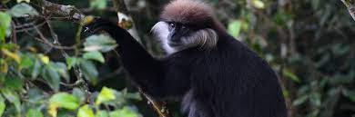
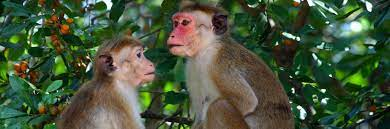
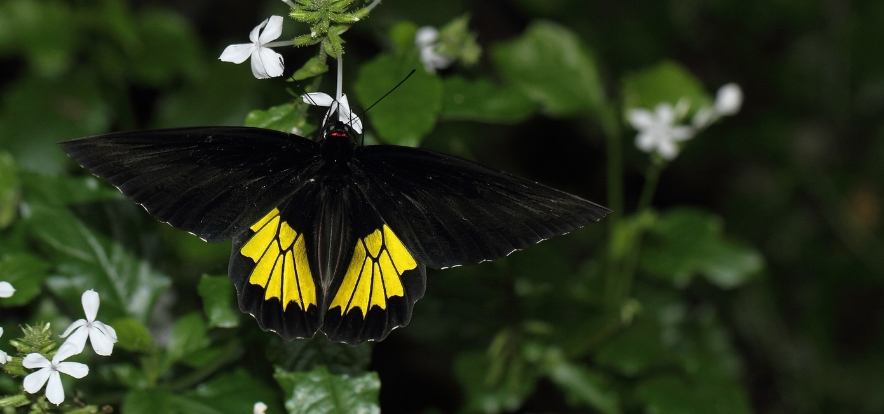

Indigenous livestock species contributes a major proportion to the total
value of Animal Genetic Resources (AnGR) of Sri Lanka. Among them,
the role of indigenous cattle is discussed in many instances
for its contribution in rural economy and farming systems.
As indicated in many investigations, the value of indigenous
cattle as a component of rural agriculture is diminishing due
to various reasons, which are common to many other countries in the region.
Generally, the indigenous cattle are evaluated only in terms of milk production,
as it is the main economic product. The tolerance to heat and resistance
to many endemic diseases make these indigenous breeds thrive better in
local rural environments and production systems than many other breeds of cattle.
These characteristics become prominent in the context of small-holder production system,
which is the predominant cattle rearing system in the country and where the resource base is low.
It has been estimated that there are around 400,000 dairy farmers in Sri Lanka and
2.45 million people (70% of the estimated 3.5 million livestock dependents)
are provided with the livelihood in dairy sector (Ranaweera, 2007).
Even though estimates are not available, a considerable proportion
of these dairy sector dependents rely on indigenous cattle.
Based on the proportional distribution of cattle,
Ibrahim et al. (1999) reported that the indigenous cattle and
their crosses represent 60% of the total cattle population in the country.
Though they represent more than half of the population, the contribution
to milk production has been marginal
Purple-faced Leaf Monkey
A long-tailed arboreal monkey with generally brownish-black on the body and limbs.
Coat colour varies with the subspecies. Though the common name suggests ‘purple’,
the face is greyish—black. The thumb of this species is markedly reduced.
It normally has a ’unimale’ social system, usually consisting of one resident
adult male with one to seven adult females and a number of sub adults, juveniles and infants.
All-male groups also exist, numbering from 2 to 14 individuals.
The group operates in its home range. Sometimes, the home ranges of all-male
groups overlap but never those of unimale groups. The resident male will defend his
territory aggressively against other males attempting to take over the harem.
This is a mainly leaf-eating species, but they do eat fruits,
flowers and seeds when appropriate, a single offspring is born
after a gestation period of 195 to 210 days.

Toque Macaque
This species has a long tail and a golden brown coat on the top.
They spend much of their time on the ground, but quite at home on the trees as well.
They also can swim very well. They are omnivorous, mainly eat leaves, fruits seeds etc.,
and occasionally small birds too. Toque macaque lives in troops sometimes as large as 40,
with a highly structured social strata. There are hierarchies among
both males and females. When troops become very large,
social tension and aggression among each other results
in some individuals to flee the troop.
The female macaque gives birth to a single offspring after
a 5-6 month gestation period and the gap between offspring is
usually 18 months. When young, offspring holds onto
their mothers and learn social skills and survival techniques.

Ceylon Birdwing
This is the largest butterfly species in Sri Lanka and is endemic.
It can be easily identified by its size and the yellow and black colours
seen when flying. Adults are fairly common, flying high close to the
tree tops at the edges of streams, rivers bordering forested areas
and even in gardens or at the edges of the forest patches adjoining rural homes.
They are strong fliers and active early in the morning up to midday and sometimes
up to early afternoon. They exhibit a certain extent of territorial behaviour,
in that they can be seen flying back and forth within the same stretch of
stream edge/ garden or forested area. Their larval host plants are from the Family Aristolochia.
In Sri Lanka most often recorded is Aristolochia indica, a small climbing plant that either
occurs in the wild or is grown in rural gardens as it has medicinal properties.

Link to Yala National Park
Yala National Park
Link to Wilpattu National Park
Wilpattu National Park